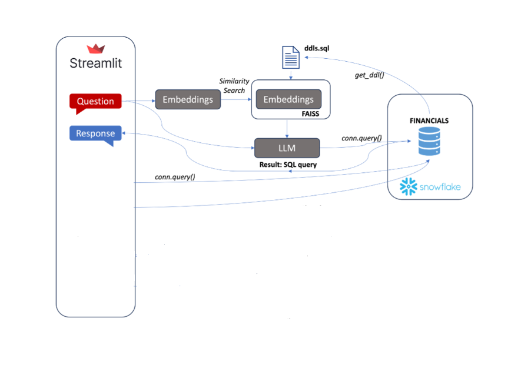

The GenAI Stock Market Assistant is a cutting-edge chatbot designed to democratize access to complex stock market information, making it easily accessible to investors, traders, and financial enthusiasts. This innovative project integrates advanced technologies such as Large Language Models (LLM), Snowflake for data storage and management, and Langchain for seamlessly translating natural language queries into precise database queries. By simply conversing with the GenAI Assistant, users can retrieve up-to-date stock market data, financial statements, and analytics without needing to navigate complicated databases or perform manual data analysis.
https://github.com/sureshdpawar/streamlit-llm-rag-db
Note: You will need an OpenAI API key to access the chatbot, which you can obtain from OpenAI API Keys.
